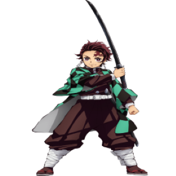
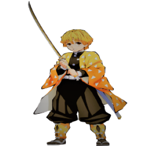
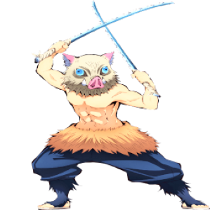

-
Tanjiro
HP 246
Descrição
Tanjiro nasceu em uma montanha como o filho mais velho de Kie e Tanjuro Kamado, uma família de vendedores de carvão. Depois que seus cinco irmãos mais novos nasceram, ele adotou a ideia de que, como filho mais velho, deveria ser forte e suportar todas as adversidades por eles
-
Zenitsu
HP 96
Descrição
Zenitsu não foi criado por seus pais, então ele não teve nenhuma orientação adequada. Quando era jovem, Zenitsu se apaixonou por uma garota e decidiu dar-lhe dinheiro para apelar a ela, porém a garota acabou fugindo com outro cara deixando Zenitsu afogado em dívidas
-
Inosuke
HP 189
Descrição
Inosuke foi criado por javalis durante a maior parte de sua vida antes da Seleção Final. Mais tarde, foi revelado que ele nasceu em uma família com um pai abusivo e escapou de seu pai com sua mãe. Depois disso, Inosuke, que ainda era uma criança na época, e sua mãe foi levada por Douma para seu culto da Fé do Paraíso